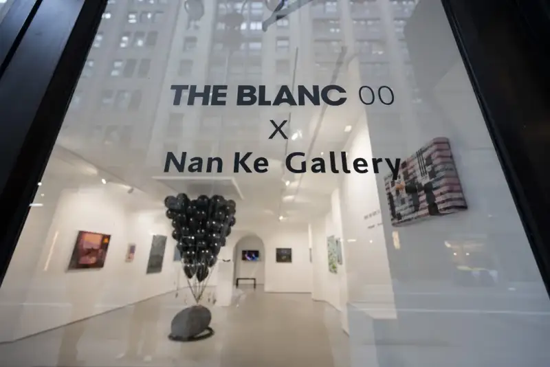
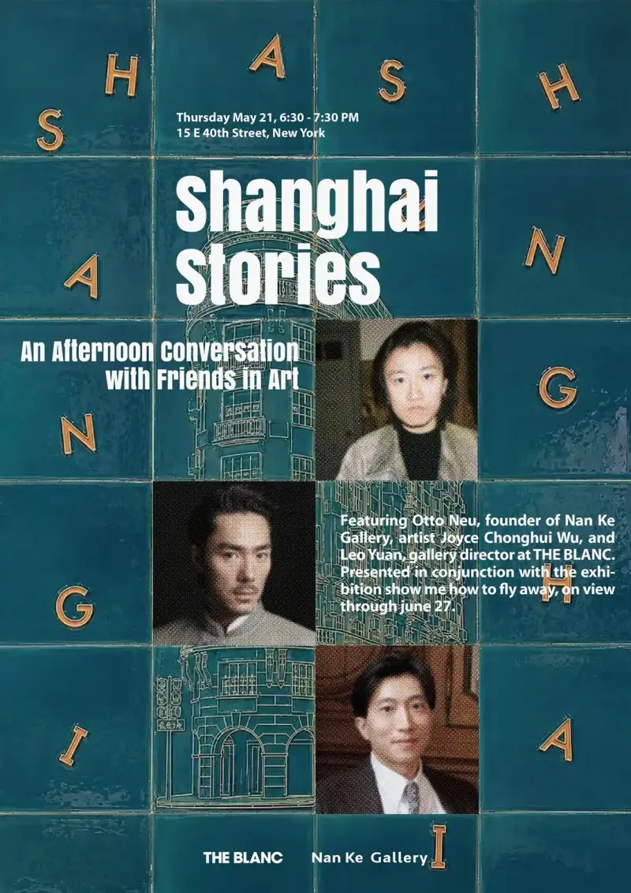
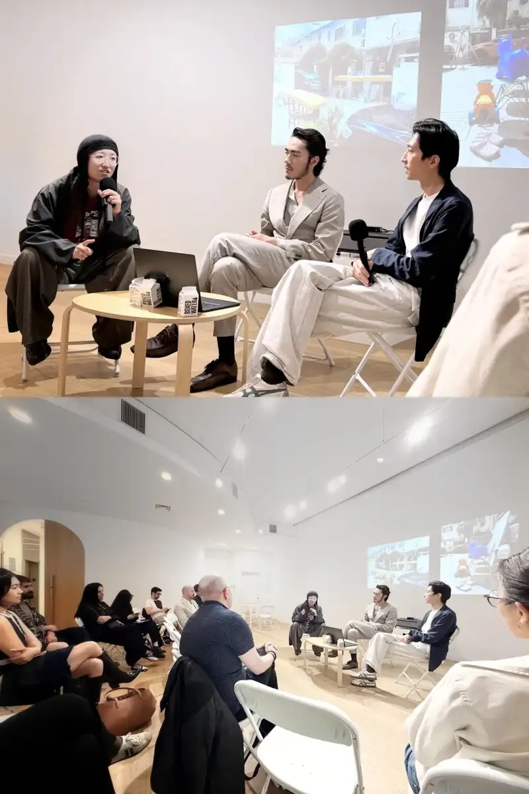
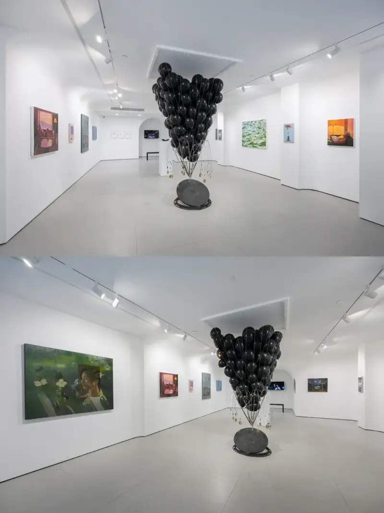
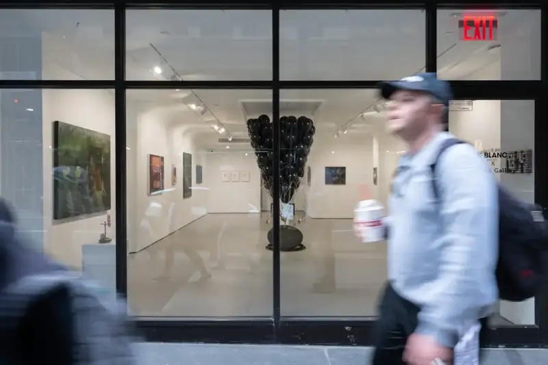
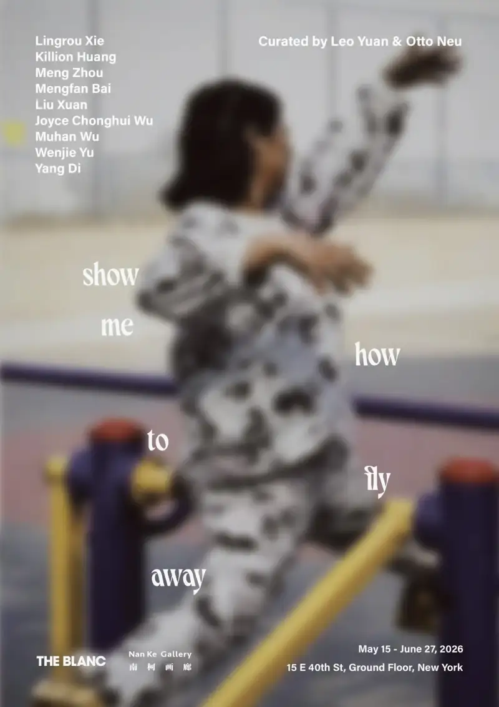

New York never lacks exhibitions. Every day a new gallery opens, new artists come into view, and new stories unfold. Yet what truly makes people stop is rarely the first time a work arrives in the city. It is the moment the work is read anew, here.
This spring, the group show Show Me How to Fly Away, presented together by Nan Ke Gallery of Shanghai and THE BLANC of New York, opened at just such a subtle moment. Otto Neu and Leo Yuan curated it. It began the first collaboration between the two institutions, and built a cultural link between Shanghai and New York that crosses distance yet echoes both cities.
The show did not try to represent Chinese contemporary art, nor define itself by a grand cultural theme. Nine young artists from Shanghai worked in painting, installation, sculpture, video, and textile, and together they formed a lighter, more personal story. They discuss the city, the body, intimacy, industrial landscape, memory, and identity, and they touch feelings that are hard to name directly. The works do not rush to explain themselves. Instead they leave an open space in New York, so that another kind of cultural experience can slowly enter.
This way of looking mirrors the change now happening in international art exchange. In the past, people expected different cultures to understand each other. Today, it may matter more to let differences exist as they are. Art need not be translated into one shared language. Instead, in a new city, with new viewers and a new context, it keeps generating new meaning.

During the show, a public talk at THE BLANC, Shanghai Stories: A Conversation with Friends in Art, carried this exchange from the gallery into public space. Curators Otto Neu and Leo Yuan, along with artist Joyce Chonghui Wu, talked about Shanghai and New York. The discussion moved between personal experience and its times, from the young art scene and city memory to cross-cultural experience and institutional partnership. More than a talk about the show, it was an open discussion of how the two cities shape artistic practice together. It turned the exhibition, a place of looking, into an ongoing public exchange.
For Nan Ke Gallery, this collaboration also carries meaning. The gallery sits in Shanghai former French Concession, where modern city history and contemporary life weave a complex texture. Independent bookshops, art spaces, bars, design brands, and young creators coexist here, and they give rise to a slow, open cultural mood. If you must find a match in New York, it is closer to the city character shared by the West Village, Greenwich Village, and Hell's Kitchen. History has not stayed in the past. It keeps taking part in life today.

For this reason, Show Me How to Fly Away does not simply bring Shanghai to New York. It builds a reflecting relationship between the two cities. Shanghai is not just the starting point of the show, and New York is not its end. The two cities together become the cultural site where the works keep generating meaning.
The nine artists each respond in their own way to the flowing relations among city, body, memory, and time. Killion Huang looks at intimacy in modern life. In soft, private scenes, identity is no longer fixed by given labels, but keeps forming through the links between people. Joyce Chonghui Wu turns the fragmentary experience of the city edge into collages of textile and image. Through constant collecting, stitching, and covering, she blurs geographic borders and builds fine, lasting links between different cultural experiences.
This sense of flow and migration also reaches into how the works imagine space and the future. Liu Xuan site installation, Sound Is Fact, Music Is Fiction #3, uses a bundle of black balloons held down by old manhole covers to create a tension between lightness and weight. The viewer action makes sound part of the work, and gives the metaphor of migration a concrete form. Di Yang, in the video Safe Word, sets the story on a journey to Mars, so that identity and reality are redefined in a highly fictional future space.

The city as a changing landscape also runs through the artists work. Bai Mengfan, who lived in New York for a long time, paints the light, buildings, and flowing views of the city with delicate restraint, keeping a subtle tension in the quiet. Xie Lingrou weaves female portraits, flowers, and glassware into dark, surreal scenes, so that memory, the subconscious, and time overlap. Yu Wenjie repeatedly stitches fabric and materials to build a balance between fragility and stability, so that the act of creation becomes an ongoing spiritual practice.
At the same time, Meng Zhou shapes fossil materials into objects with an Eastern feel, bringing in myth, anthropology, and deep time, so that matter and image together carry the layering of history. Muhan Wu uses a minimal sculptural language to rearrange industrial parts and everyday objects, building a steady tension between mechanical systems and bodily perception. The nine artists do not share one visual language. Together they outline how this generation of young artists responds to reality, the city, and their own experience, and they give Show Me How to Fly Away an open, diverse contemporary picture.

If, in the past decades, Chinese contemporary art entered the international story mostly through a few representative artists, then today a younger generation is seen by the world in another way. They have no shared aesthetic and no common manifesto. They care more about individual experience, daily life, and the small but real feelings. Yet these seemingly minor moments form the shared language of this generation.
The show will end, and the works will leave New York to continue on their own journeys. But what truly remains may not be any one work. It is an ongoing connection, among artists, institutions, cities, and the people who meet through looking. Show Me How to Fly Away does not answer where we should fly. It only reminds us that today, crossing distance is no longer just reaching another city. In constant movement, we meet another culture anew, and understand ourselves anew.

Show Me How to Fly Away (run: 2026.5.15 - 2026.6.27)
Venue: 15E 40th St, Grand Floor, New York